0130 秒速覽
TL;DR — 把「軟體工程 agent 的 debug 迴圈」搬進機器人
寫機器人程式很難：要同時搞定感知、路徑規劃、抓取、接觸力學，而且一次失敗你根本不知道是哪一環壞掉。ASPIRE 的做法是——讓 LLM coding agent（實驗用 Claude Opus 4.6，1M context）自己寫機器人 Python 程式、自己看執行紀錄除錯、自己把驗證過的修法存成可重用技能。三個關鍵設計：逐步驟多模態 trace、共享技能庫、演化式搜尋。
02要解什麼問題
§1 Introduction
「code-as-policy」路線（用 LLM 寫程式來組合感知、規劃、控制 API）已經存在，但有兩個根本缺陷：
- 回饋太粗：既有系統只告訴 agent「任務失敗了」，不告訴它是感知錯、抓取不穩、規劃失誤、還是後續復原失敗。沒有細粒度證據，agent 無從對症下藥。
- 經驗不累積：任務解完，發現的修法和復原策略就被丟掉。每個新任務都從零開始。
對照組是人類機器人工程師的工作方式：重播執行過程、檢查感知輸出和運動軌跡、定位壞掉的子系統、修程式，然後把可重用的復原策略內化成經驗。ASPIRE 就是把這整套工作流自動化。
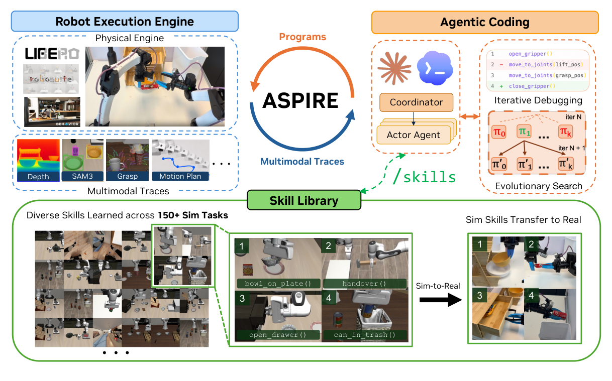
03方法：三大元件
§2 Method — 開放式學習迴圈
① 機器人執行引擎
逐 primitive 記錄多模態 trace：RGB 關鍵幀、覆疊圖、抓取候選、規劃結果、回傳狀態
② 技能庫
驗證過的修法蒸餾成可重用技能：失敗特徵 + 適用條件 + 修復策略 + 程式碼片段
③ 演化式搜尋
每輪產生 K 個候選程式，以最佳存活者＋失敗 trace 為條件繼續演化，跳出局部修補迴圈
3.1 機器人執行引擎：把「除錯環境」開放給 agent
先前方法用固定的人工介面餵回饋（場景摘要、預設觀測），證據太少會藏住失敗的 primitive，太多原始畫面又會淹沒因果鏈。ASPIRE 的引擎為每一次感知／規劃／抓取／控制呼叫記錄：呼叫的 API、輸入輸出、回傳狀態、對應的視覺證據。agent 不收完整影片，只拿每個 primitive 呼叫前後的關鍵幀＋覆疊圖＋回傳值，自己決定要檢查哪些證據。
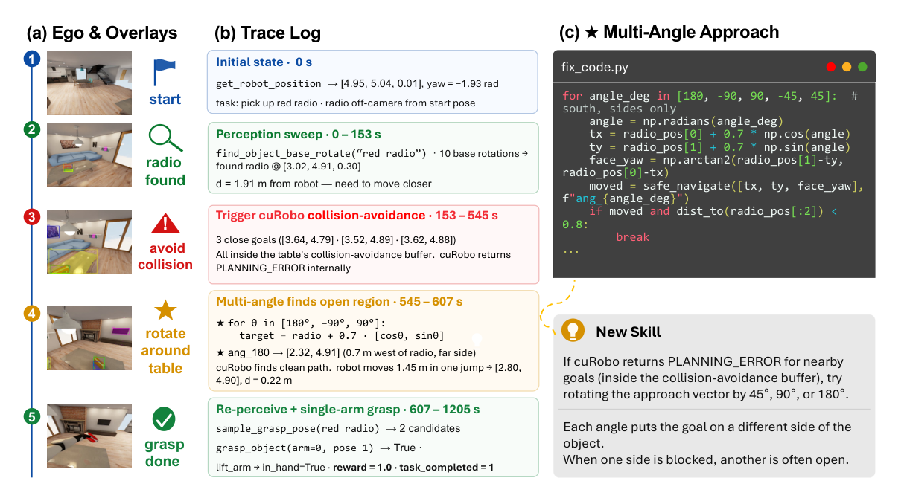
PLANNING_ERROR——候選導航目標全落在桌子的碰撞緩衝區內。(c) agent 補上「多角度接近」程式：換方向繞到桌子另一側、重新感知、完成抓取。驗證後這個修法被收錄為可重用的 Multi-Angle Approach 技能。3.2 技能庫：存「修法模式」而非「整包程式」
失敗會跨任務重複出現，但可重用的知識很少是整個任務程式。每條技能存成精簡的 in-context 提示：失敗特徵（signature）→ 何時適用（when-to-apply）→ 修復策略 → 代表性程式碼草圖。收錄有審核流程：actor 回報結構化發現 → coordinator 稽核、驗證 API 合規 → 只有通過 debug 驗證的可重用模式才進庫。
↑ 六大類別不是預先設計的分類法，而是從 agent 自己的除錯經驗中「長」出來的。
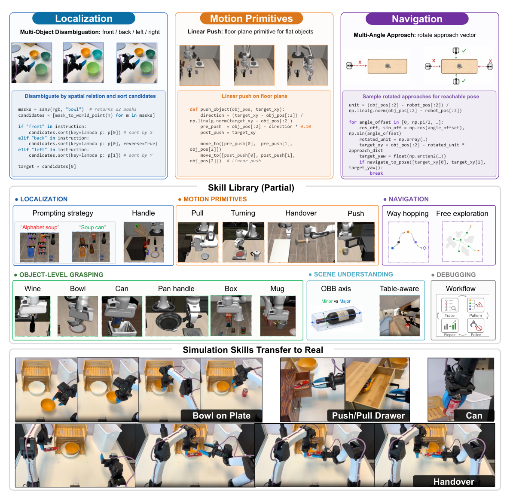
3.3 演化式搜尋：跳出「一直修同一招」的死胡同
只靠 trace 除錯容易陷入局部修補迴圈——agent 反覆修補同一個失敗策略，而不是嘗試根本不同的解法。ASPIRE 用演化式搜尋擴大探索：
每輪由 coding agent 基於技能庫 + 前幾名程式 + 失敗 trace，提出 K 個候選程式
每個候選丟進執行引擎跑，得到任務結果 + 新的診斷 trace
下一輪以表現最好的程式＋其殘餘失敗模式為條件——鼓勵探索不同策略而非重複精修同一解
候選解掉 debug 配置或預算用盡即終止；能跨環境變化泛化的修法才收進技能庫
04實驗結果
§3 Experiments — 三大 benchmark 家族 + 零樣本遷移 + 消融
設定：模擬實驗全部用 Claude Code + Claude Opus 4.6（1M token context）當 coding agent，在 CaP-X 框架（MuJoCo Playground）寫可執行的 Python 機器人程式。agent、環境、API 全程固定。主要對手是 CaP-Agent0（前一代 coding agent，靠測試時推理＋重試），以及端到端 VLA 模型（OpenVLA、π0、π0.5）。
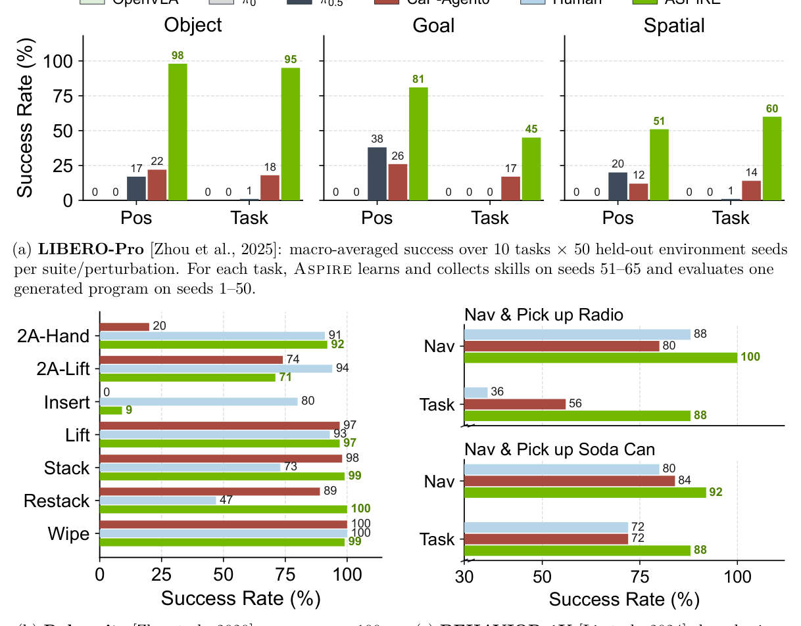
逐 benchmark 重點（數字皆出自論文正文）
- LIBERO-Pro（短程操作、抗擾動）：三個套件全勝所有 baseline。對各套件最強對手的平均增益：Object +77 分、Goal +41.5 分、Spatial +42.5 分。π0.5 在部分位置擾動上比 OpenVLA / π0 強，但在任務改寫（paraphrase）下大幅崩潰。
- Robosuite（接觸密集操作）：簡單任務維持近飽和，雙臂 handover 從 20% → 92%。
- BEHAVIOR-1K（長程家務）：導航與任務成功率同時超越人類專家程式與 CaP-Agent0，最大單項增益在撿收音機任務：56% → 88%。
零樣本遷移：技能庫是會生利息的資產
把 LIBERO-90 上累積的技能庫直接拿去解沒看過的 LIBERO-Pro Long 長程任務——不重新除錯、不重試、不更新庫：
LIBERO-Pro Long 零樣本成功率
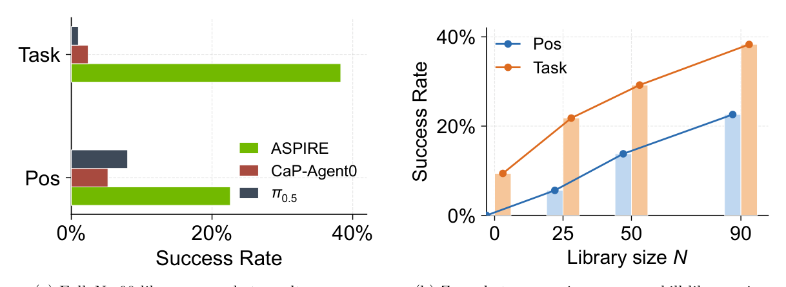
消融：哪個元件貢獻最大？
LIBERO-Pro macro-average 成功率（元件疊加）
執行引擎（細粒度 trace）是最大功臣（14→62），演化式搜尋再把剩下的硬任務往上推（62→72）。搜尋輪次前幾輪進步快、之後報酬遞減。
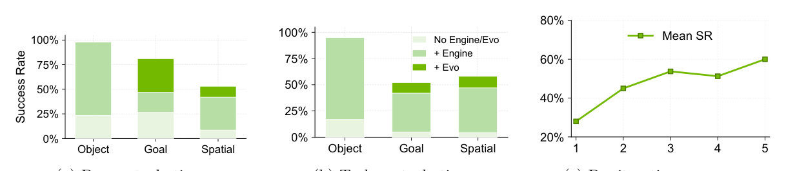
05模擬技能搬到真實機器人
§3.6 — 跨形體（cross-embodiment）技能遷移
這不是直接部署 policy：真實機器人（雙臂 YAM 操作平台，agent 換成 OpenAI Codex GPT-5.5 reasoning-xhigh）有自己的感知、校正、控制堆疊，連 API 都不同。問題是：把 Franka 模擬中發現的技能當 in-context 提示給真機 coding agent，能不能省下真實世界的除錯成本？
| 任務 | 總 Token（M）↓ | 成功率 ↑ | ||
|---|---|---|---|---|
| 無技能 | 有技能 | 無技能 | 有技能 | |
| 碗放到盤子上 | 8.65 | 5.11 | 20/20 | 20/20 |
| 拿起汽水罐 | 61.94 | 6.58 | 13/20 | 19/20 |
| 開／推抽屜 | 334.9（未成功） | 81.67 | 0/20 | 11/20 |
06技能庫長什麼樣（原圖集）
Appendix A — 每條技能：問題 → 適用時機 → 策略 → 驗證過的程式碼
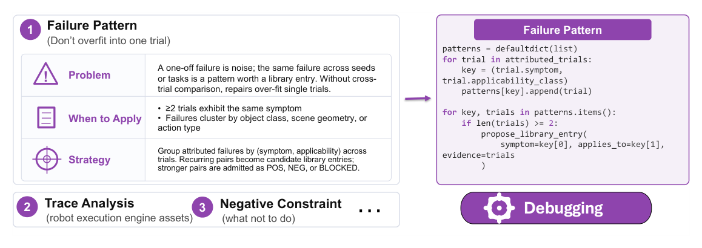
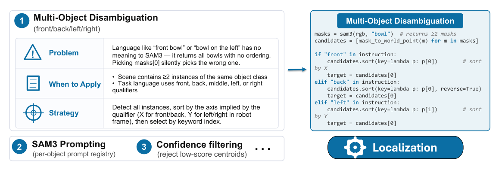
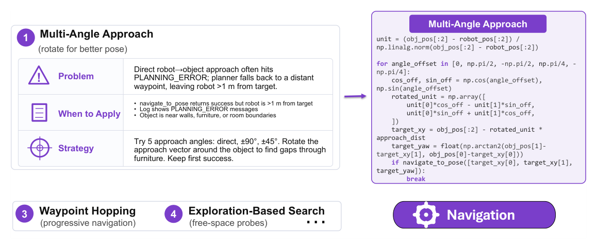
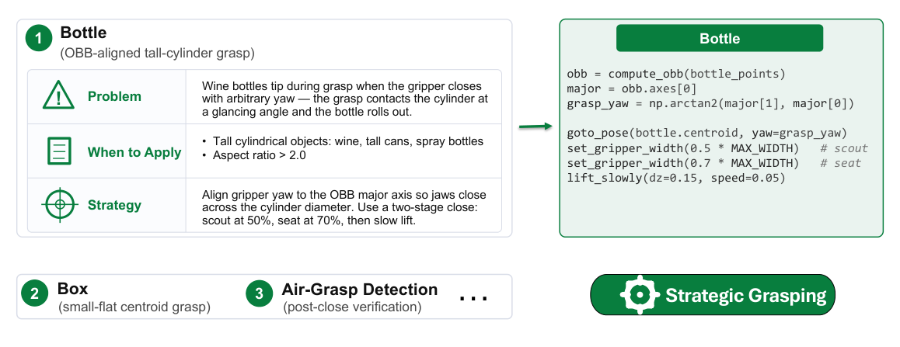
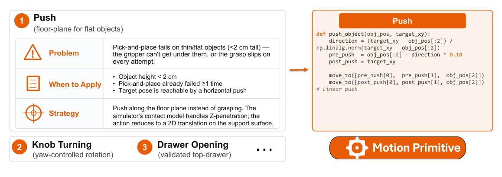
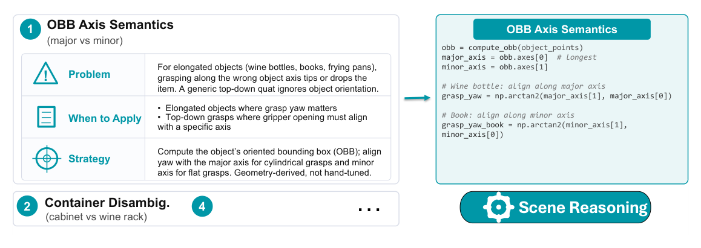
07附錄深讀：數據全表 + Agent 工程原始碼級細節
Appendix A–E（p.17–43，佔全文 27 頁）— 這裡是論文真正的含金區：完整數據表揭露了正文沒說的細節，Appendix E 更直接把整套 multi-agent 系統的 prompt / CLAUDE.md / SKILL.md 攤開給你抄
A｜技能條目的標準解剖（每條技能長這樣）
Appendix A 把 Figure 3 的代表性條目展開成完整分類法。每條技能都是同一個四段式結構：
對應的實際程式碼（Figure 10「Bottle」條目原文）：
# 高瘦圓柱抓取：OBB 對齊 + 兩段式閉合 obb = compute_obb(bottle_points) major = obb.axes[0] grasp_yaw = np.arctan2(major[1], major[0]) goto_pose(bottle.centroid, yaw=grasp_yaw) set_gripper_width(0.5 * MAX_WIDTH) # scout（探測） set_gripper_width(0.7 * MAX_WIDTH) # seat（坐實） lift_slowly(dz=0.15, speed=0.05)
其他值得記的條目：Push 原語的適用條件是「物高 < 2 cm ＋ pick-and-place 已失敗 ≥1 次」——薄扁物夾不起來就改推的；Failure Pattern 除錯技能明訂「同一症狀 ≥2 個 trial 才成 pattern，單次失敗是雜訊」——防止對單一 trial 過擬合；Multi-Angle Approach 的精確觸發條件是「navigate_to_pose 回報成功但機器人離目標 >1 m ＋ log 出現 PLANNING_ERROR ＋ 物體貼近牆/家具」。
Algorithm 1｜演化搜尋偽代碼逐行讀
正文 §2.3 的 Algorithm 1 是整個「跳出局部修補」機制的形式化。值得逐行讀，因為好幾個關鍵工程決策直接寫死在演算法簽名裡：
Require: 任務 τ, 初始程式 P⁰, seed 集 S_dbg / S_val, 技能庫 L, agent M, 預算 (K 候選 × T 輪), 門檻 θ Notation: EXECUTE(P, S) → (分數 r, trace 包 Z) 1 (r*, Z⁰) ← EXECUTE(P⁰, S_dbg); P* ← P⁰ ← baseline 先跑，當第一個「存活者」 2 H ← {(P⁰, r*, Z⁰)} ← H = 完整歷史：程式+分數+trace 都留 3 for i = 1 .. T: 4 {P_i^k} ← PROPOSEREPAIRS(M, τ, Top3(H), L, H) ← 只給前 3 名當條件，但完整 H 可查 5 for k = 1 .. K: (r_i^k, Z_i^k) ← EXECUTE(P_i^k, S_dbg) ← 迭代永遠只碰 debug seeds 8 H ← H ∪ 全部候選; k* ← argmax r_i^k 9 if r_i^{k*} > r*: (P*, r*) ← 換人 ← 全域最佳，不是本輪最佳 12 if r* ≥ θ: break ← 夠好就停，省預算 16 (r_val, Z_val) ← EXECUTE(P*, S_val) ← held-out 只在最後跑一次 17 G ← EXTRACTVALIDATEDPATTERNS(H, P*, r_val, Z_val) ← 技能萃取在搜尋「結束後」做 18 return (P*, r_val, G)
S_dbg 和 S_val 分開出現在演算法簽名裡：第 5 行迭代只用 S_dbg，第 16 行 S_val 只執行一次且結果不回流。防作弊不是靠 prompt 叮嚀，是流程上根本沒有回頭路。
下一代以「前三名存活者＋其殘餘失敗 trace」為條件，而不是只精修第一名——這就是它跳出「反覆修同一招」的機制。
只有拿 held-out 成績驗過的 P* 才有資格貢獻 pattern，而且萃取時可以回看整個 H（包括失敗候選）——失敗分支也是知識（「這條路試過，不通」）。
解掉 debug 配置就停，剩餘預算留給別的任務。對照 Table 9：多數任務 1–2 輪就收斂，難任務才會跑滿 5 輪。
B + D｜完整數據表：正文圖表沒告訴你的事
Table 2 的殘酷對照：OpenVLA 和 π0 在 LIBERO-Pro 全部擾動軸上是全零（0.00 across the board）——不是低，是零。π0.5 平均 0.13、CaP-Agent0 0.18、ASPIRE 0.72。端到端 VLA 在擾動下的崩潰程度比正文長條圖看起來更徹底。
Table 3 的誠實數字：Robosuite 上 ASPIRE 也有輸的——two_arm_lift 0.71 vs baseline 0.74、spill_wipe 0.99 vs 1.00，而 nut_assembly 兩邊都爛（0.00 vs 0.09）。贏面集中在 handover（0.20→0.92）和 restack（0.89→1.00）。
Table 5–6：零樣本遷移的非單調真相。宏觀平均確實隨庫變大單調上升（N=0→90：Pos 0→23%、Task 9.4%→38%），但逐任務看就不是了：
| 任務（Task 擾動軸） | N=0 | N=25 | N=50 | N=90 |
|---|---|---|---|---|
| Stove + moka pot（Pos 軸） | 0.00 | 0.30 | 0.84 | 1.00 |
| Both mokas on stove | 0.00 | 0.00 | 0.84 | 1.00 |
| Soup + tomato sauce | 0.78 | 0.68 | 0.02 | 0.70 |
| Mug on two plates | 0.16 | 0.28 | 0.08 | 0.00 |
| Bowl in drawer / Mug in microwave | 0.00 | 0.00 | 0.00 | 0.00 |
「Soup + tomato sauce」在 N=50 時從 0.68 崩到 0.02、N=90 又回到 0.70；「Mug on two plates」隨庫變大反而歸零——這就是正文侷限第 4 條說的「過時/誤導條目」的實證。技能庫不是永遠的正資產，會互相干擾。另外兩個任務（抽屜、微波爐）四種庫大小全零：涉及鉸接物件的長程任務，零樣本還是完全解不了。
Table 7–8：消融的逐任務細節還藏了一個工程決策——最終 ASPIRE 分數是「修復程式 vs 演化搜尋結果」在另一組 held-out 驗證 seeds（66–80）上逐任務挑贏家，不是無腦取 max。所以會出現演化搜尋單項比最終分數高的情況（如 spatial 的 From table center：Evo 0.82 但最終選了 0.32 的修復版）——因為在驗證集上修復版更穩。zero-shot Claude Opus 4.6 裸寫（無引擎無搜尋）在 object 套件平均只有 0.24 / 0.17，加引擎直接跳到 0.98 / 0.95。
Table 9：演化搜尋不是單調爬升。逐輪 held-out 成功率：
每列 = 一個任務，格子 = Iter 0→4 的最佳候選 held-out 成功率。注意 .62→.18→.86 這種劇烈震盪——中間輪可能整批候選走錯方向，撐完預算才翻盤。「Push plate → stove」則是一輪翻身：0 → 0.80。
E｜真正的寶藏：整套 agent 系統的原始碼級細節
E.2 CLAUDE.md：agent 的「憲法」＋ 防作弊紅線
ASPIRE 用 Claude Code 原生機制管理 agent：repo 根目錄放 CLAUDE.md（每 session 必讀）、.claude/memory/MEMORY.md（跨 session 專案記憶）、.claude/skills/<name>/SKILL.md（自動發現的技能）。最關鍵的設計是用 API 白名單/黑名單防止 agent 作弊：
⛔ FORBIDDEN（用了就作廢）
env.handle.env.sim— 禁碰 MuJoCo sim 物件sim.data.body_xpos— 禁讀 ground-truth 物體位置- 讀
.bddl/.xml/.urdf資產檔推斷幾何或成功條件 set_joint_qpos「瞬移」夾爪或強開抽屜- 硬編碼像素座標、跨 seed 快取物體位置
✅ ALLOWED（真機器人做得到的）
get_observation()— RGB、深度、內外參、機器人狀態segment_sam3_text_prompt(rgb, text)— SAM3 文字分割plan_grasp()/solve_ik()— 抓取規劃與 IKmove_to_joints()/ 夾爪開合 / 回 home- 幾何工具：OBB、mask→世界座標點雲
判斷準則一句話：「有相機的真機器人做得到的就允許；讀物理引擎內部狀態的就禁止。」MEMORY.md 裡還有幾條工程慣例值得抄：絕不自動 git commit、可重用分析一律寫成 script 而非 inline python -c、每次重要工作後 append 到 docs/logs/YYYY-MM-DD.md（含 trial 編號、成功率、錯誤訊息、檔案路徑）。
E.3 修復迴圈：coordinator / subagent 的分工契約
Coordinator 五條鐵律（原文照列）：① 只派工不親自除錯；② 派完就 idle，等完成通知、不輪詢不干預；③ 讓每個空閒運算裝置都有工作；④ 不碰任務層除錯產物（trace、程式、keyframe 是 subagent 的事，只讀最終 findings.md）；⑤ 絕不重派已完成任務——重複 trial 目錄會汙染統計。
Subagent 的兩階段協定＋評測集封鎖——這是整個 benchmark 可信度的支柱：
Stage 1：只准碰 debug seeds
- Fast path：先看 baseline 有沒有已成功的 seed，有就直接萃取其程式測試
- 逐 seed 讀 trace.json / code.py / keyframes / summary.txt 診斷
- 讀技能庫 → 寫 fix.py → 只在 debug seeds 上重放迭代
- 硬上限：每個 debug seed 最多 3 次重放，超過就寫 BLOCKED.md 移交
- 合成單一 fix_code.py——禁止 seed-specific 分支
debug 期間鎖死
違者結果作廢
Stage 2：held-out 一次定生死
- 驗證 seeds 只跑一次，寫入官方輸出目錄
- 不准用 Stage 2 結果回頭改程式
- 回報前先確認輸出真的落在預期目錄
- 最後動作：跑共享 progress script（原子更新、並行安全）
trace 診斷的「讀症狀」對照表也直接寫在 prompt 裡：夾爪閉合後寬度大 → 可能抓到了；寬度小 → 可能抓空；零 masks → prompt 爛或遮擋；IK 無解 → 目標出工作空間；早期 crash → 看 stdout/stderr。findings.md 有固定 schema（根因 / 修法 / 有效感知 prompts 表 / 可泛化模式 / 任務特有怪癖 / Stage 2 成功率），coordinator 只把「可泛化模式」升入共享技能庫。
E.4 演化搜尋 subagent：task_analysis.md 是靈魂
每個演化搜尋任務維護一份跨輪次的 task_analysis.md，內含：(i) 場景描述（物體形狀、目標幾何、障礙、被擋的接近方向，從初始 snapshot 建立一次）；(ii) 進行中的假設＋測試它們的候選 metadata；(iii) 「已淘汰方向」與「被擋但未測方向」的帳本——後者的存在讓新技術出現時（例如學會手腕旋轉）可以回頭重試之前被擋的分支，而不會重測已被證偽的分支。
寫候選的紀律直接寫死在 prompt：每個候選必須測試不同假設；任何兩個候選不得在同一階段因同一原因失敗；每個候選要有 docstring 說明假設、與先前候選的差異、若假設錯誤預期的失敗模式。還有一段反過擬合訓詞：debug seeds 是小樣本，「為 held-out seeds 寫程式，不是為 debug seeds 寫」——偏好機制上成立的策略，禁止從 debug 失敗擬合出來的硬編碼閾值、影像遮罩、偏移量。停滯時的指令也很反直覺：撞到高原（plateau）不代表任務無解，代表當前方法家族可能是錯的，剩餘預算要拿去探索結構性新方法而不是提早停。
演化搜尋版 coordinator 的完整主迴圈（p.34 原文）簡潔到可以直接背：
# coordinator.md「The Loop」原文 read progress → assign free devices → dispatch subagents → go idle ↑ on notification: redispatch freed device to next pending task ─┘ # 一個任務 = 一個 subagent = 一台運算裝置 # subagent 自己跑完 Stage 1（debug 迭代）+ Stage 2（held-out 驗證）才回報 # 收到完成通知時，該裝置已是空閒 → 立刻派下一個任務
派工用的正是 Claude Code 的 Agent() 呼叫（subagent_type="general-purpose"、run_in_background=True、模型欄位填實驗選定的高階推理模型），一次訊息把所有空閒裝置派滿然後停手。停止條件三選一：最佳候選在 debug seeds 達標、輪數用盡、或任務被判 blocked——blocked 就跳過 Stage 2 直接返回，不浪費 held-out 配額。
演化搜尋 subagent 的 Stage 1 標準作業（p.35–36，七步）：
evosearch_best_code.py 已存在就直接跳到回報。另一個地雷檢查：benchmark 檔名可能跟實際目標不符，runtime task language 才是 ground truth，不一致時以 runtime 為準並記錄。
讀 grasping / localization / transport / manipulation 相關技能；若 actor pipeline 留有修復程式，原封不動當 candidate_A 種子——演化不從零開始。
寫程式前先在一個 debug seed 上拍場景快照（廣角＋腕視角），把物體形狀、抓取策略、目標幾何、第一輪假設寫進 task_analysis.md。
每個候選測不同假設、不得在同一階段因同一原因失敗、docstring 要寫「假設是什麼／跟前輩差在哪／假設錯了預期怎麼掛」。
所有輪次用同一組 debug seeds——跨輪比較才公平。跑完讀 leaderboard＋trace 分析，盯手臂卡住、夾爪寬度訊號、感知失敗、IK 失敗。
每輪更新 task_analysis.md（新幾何、淘汰假設、未解問題），以本輪最佳存活者為種子再寫 K 個。停滯時把剩餘預算拿去換「方法家族」而不是提早停。
最佳候選若沒贏過 baseline 種子，退回較強的 baseline——Stage 2 永遠用手上最強的程式。全滅則標 blocked、跳過 Stage 2。
findings.md 回報 schema（p.37）——這是技能入庫流水線的「原料格式」，欄位設計本身就是知識管理：
E.5 初始技能模板：只給骨架，參數留白等實驗長出來
系統出廠只帶四個「結構模板」技能——grasp / localize / manipulation / transport——刻意不含任何任務特定參數。每個模板底部都有一張空的 Registry 表（per-object 抓取參數、SAM3 prompt 註冊表、鉸接物件參數、waypoint 模式），由 coordinator 在審核 findings.md 後逐行填入。所有權寫得很清楚：「Coordinator 增補可泛化模式，Subagent 不得編輯此檔。」
每份模板的固定骨架：Purpose ＋ Ownership 聲明 → 可直接複用的 helper 程式碼 → 空白 Registry 表 → Anti-Patterns → 症狀對照除錯表。以下逐份拆（p.38–43 原始碼級內容）：
▍grasp — 抓取骨架與除錯表
核心 helper 是 top-down 四元數建構（含一個藏在註解裡的座標慣例地雷——scipy 回 xyzw、solve_ik 要 wxyz）：
def make_topdown_quat(yaw_deg=0): """Build a top-down end-effector quaternion (xyzw→wxyz convention used by solve_ik).""" R = Rotation.from_euler('z', yaw_deg, degrees=True).as_matrix() @ \ np.array([[1,0,0],[0,-1,0],[0,0,-1]]) q = Rotation.from_matrix(R).as_quat() # scipy returns xyzw return np.array([q[3], q[0], q[1], q[2]]) # reorder to wxyz
標準 pick-and-place 骨架固定八步：plan grasp（用物體 mask）→ pre-grasp 懸停 → 下降閉爪 → 上提（避免側拖撞鄰物）→ 平移到目標上方（同上提高度）→ 下降到釋放高度（surface_z＋餘裕）→ 開爪 → 讓物理沉降（最後一步關係到 drop-success 判定的讀值正確性）。select_top_down_grasp 存在的理由也寫明：plan_grasp 回的是相機座標系、常是斜角或側面抓取，桌面任務要轉世界座標再過濾出「z 軸大致對抗重力」的候選，全空時 fallback 到分數最高者。模板也明說什麼時候不該用它：抽屜/微波爐（用 manipulation）、堆疊（要 stack 專用 surface_z 邏輯）、有壁窄容器（yaw 要避壁、釋放高度要在籃緣上）。除錯表直接給「症狀→原因→檢查法」：
| 症狀 | 可能原因 | 檢查法 |
|---|---|---|
| 夾爪對空氣閉合 | z 太高（沒降到物面） | 印 grasp_pos[2] 對 surface_z；用 OBB extent[2]/2 以下 |
| 抓到但上提時掉 | 滑面/細長物半閉合 | 換垂直 yaw（90°）或改沿長軸夾 |
| plan_grasp 回空 | mask 太小或低於門檻 | 膨脹 mask；log mask.sum()——應 >200 px |
| solve_ik 回 None | 位姿出工作空間 | z 降 5 cm 重試；從機器人基座重查 x/y 可達性 |
▍localize — 多 prompt fallback 與消歧
標準定位 helper 把「prompt 不穩」工程化成依序嘗試的迴圈——每個 prompt 要過三關（有 mask、mask 轉點雲 ≥10 點、OBB 中心可算）才算命中：
def localize_object(rgb, depth, K, E, prompts): """Try prompts in order, return (center, pts, mask) for first hit with >=10 points.""" for prompt in prompts: masks = segment_sam3_text_prompt(rgb, prompt) if not masks: continue best = max(masks, key=lambda d: d["score"]) mask = best["mask"].astype(np.uint8) # 忘了轉型 → 下游靜默失敗 pts = mask_to_world_points(mask, depth_img, K, E) if pts is None or len(pts) < 10: continue center = get_oriented_bounding_box_from_3d_points(pts)["center"] return center, pts, mask return None, None, None
三層防線：①OBB 中心優於 pts.mean()（細長／被遮擋物體點雲平均會偏）；②SAM3 全空時 fallback 到 Molmo 像素定位再轉 SAM3 point prompt；③場景有兩個同類物體時 max(score) 常挑錯——改用「最小 bbox 面積」或「bbox y 座標」（畫面越上方越遠）消歧。隱藏地雷原文照抄：「SAM3 結果的 area_pct 欄位對所有 mask 一律回 99.00——面積要從 box 自己算。」Prompt Registry 的入庫規則（coordinator 專屬）有一條很成熟的取捨：prompt 若只對單一任務有效，留在該任務的 task_code.py 裡，不進共享庫——避免庫被過度特化的條目汙染。
▍manipulation — 鉸接物件與非抓取動作
涵蓋抽屜開關、旋鈕/開關撥轉、鉸鏈門、非抓取推移——都是「非 top-down、要弧線運動、接觸但不夾持」的動作家族。參數 Registry 按物件類型累積（拉距、角度、offset、接近方向）。Anti-Patterns 三條全是紅線：禁 set_joint_qpos 硬開抽屜（必須物理操作）、禁讀 BDDL 拿拉距/旋角（要靠 OBB 或試錯發現）、操作完必須 retreat——手臂留在抽屜/微波爐裡會擋住下一步感知。
▍transport — 三段航點與遠工作空間
# Waypoint 1: 垂直上提（避免側拖） lift_z = grasp_pos[2] + 0.15 # 場景相對值，禁絕對 z joints = solve_ik([grasp_pos[0], grasp_pos[1], lift_z], quat.tolist()) if joints is not None: move_to_joints(joints) # Waypoint 2: 同高度平移（避免撞檯面其他物體） joints = solve_ik([tgt_center[0], tgt_center[1], lift_z], quat.tolist()) # Waypoint 3: 下降到釋放高度 release_z = surface_z + 0.05 joints = solve_ik([tgt_center[0], tgt_center[1], release_z], quat.tolist())
為什麼三段而非直線 goto，原文一句話講完：直線會走對角線，削到高物、籃壁、抽屜口；三段直角航點（上→平→下）讓物體全程在無障礙空域。另外兩個 helper：子任務間 home reset（開爪→回 home→連取 3 幀讓物理沉降，否則下一子任務會「透過還在畫面裡的手臂」做感知）；遠工作空間一律 solve_ik＋move_to_joints（goto_pose 在檯面深處不可靠），IK 無解先把 z 降 2 cm 再試、還是無解就明確 raise。
08侷限（論文自己承認的）
§5 Limitations — 五條，都很誠實
09我的重點筆記
給趕時間的人
- 本質是 SWE-agent 思維移植到機器人：write → execute → inspect trace → repair → validate，再加一層「經驗結晶成技能庫」。跟 Voyager（同作者群 Jim Fan / Guanzhi Wang 的 Minecraft agent）一脈相承，但這次 trace 是多模態的物理執行證據。
- 最有價值的元件是「可除錯性」不是「搜尋」：消融顯示執行引擎貢獻 14→62，演化搜尋只再加 10 分。給 agent 好的觀測介面比給它更多嘗試次數重要。
- 技能 = 失敗簽名 + 適用條件 + 修法 + 程式碼草圖，且要通過「跨 trial 重現 + coordinator 審核」才入庫——這個 admission 流程是它跟一般 memory/reflection 系統的分水嶺。
- 評測協定值得注意：ASPIRE 每任務只交一支固定程式打 held-out seeds，baseline 卻可以每 seed 重新生成＋重試——是在更嚴格條件下贏的。
- 跨形體遷移的證據等級：只有 3 個任務、每任務 20 trials、換了 agent（Codex GPT-5.5），論文自己也說是 initial evidence。方向誘人，但樣本還小。